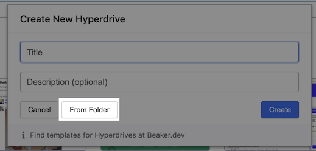
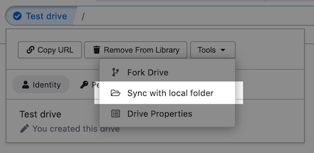
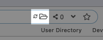
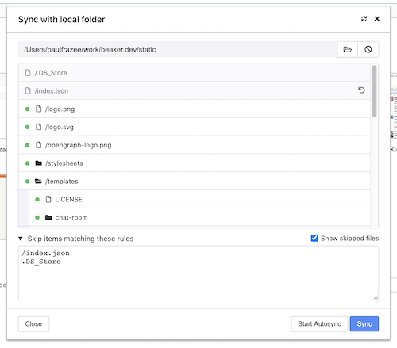
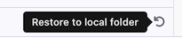

Sometimes you want to work on a Hyperdrive using files that are outside of Beaker. This is common when you're using your own source-control, like Git, or when you just want to use an editor outside of Beaker.
In this case, you can use "folder sync."
When you create a new hyperdrive, you can select a folder to sync by pressing the "From Folder" button. This will cause the drive to be created with the contents of that folder.

To add folder-sync to an existing drive, click the site-info button and then select "Sync with local folder" under the tools.


Once folder sync is setup, you'll see an icon on the top right of your URL bar. You can click on that icon to open the folder sync controls.

The default behavior of folder sync is to manually sync the folder.

On the right side of files marked for deletion, you'll find a "restore" button. You can click this to copy the file from the hyperdrive to the local folder.
You can choose to skip files by expanding the "Skip items matching these rules" control. This control is similar to ".gitignore" files and supports using glob stars ("*"). Skipping files is useful for avoiding accidental imports (like your .git or node_modules folders) and for preserving data created by beaker (like the index.json manifest).
When you're ready to sync the folder, click the big blue "Sync" button.
If you want the folder to automatically sync when changes occur, toggle the "Autosync" checkbox. This will sync the folder while respecting your deselected files.
Autosync only stays active as long as Beaker is running, so if you restart Beaker, you'll need to turn it back on.
Caution! Be careful with autosync! If you're running a command that will generate folders for the first time like git init or npm install you should turn off autosync so that you can disable sync for the folders they generate.